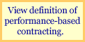

A Performance-Based Preference
Over the last decade and a half, innovators in Congress and the executive branch have reformed the laws and policies that govern Federal acquisition. Among the most important of these reforms are the Government Performance and Results Act of 1993, the Federal Acquisition Streamlining Act of 1994 (FASA), and the Clinger-Cohen Act of 1996. All of these laws send an important message about performance in federal programs and acquisitions.
As is evident from the dates above, performance-based service acquisition is not new. Office of Federal Procurement Policy Pamphlet #4, "A Guide for Writing and Administering Performance Statements of Work for Service Contracts," (now rescinded) described "how to write performance into statements of work" and addressed job analysis, surveillance plans, and quality control in 1980. Eleven years later, OFPP Policy Letter 91-2, Service Contracting," (also now rescinded) established that:
It is the policy of the Federal Government that (1) agencies use performance-based contracting methods to the maximum extent practicable when acquiring services, and (2) agencies carefully select acquisition and contract administration strategies, methods, and techniques that best accommodate the requirements.
The intent is for agencies to describe their needs in terms of what is to be achieved, not how it is to be done. These policies have been incorporated in the Federal Acquisition Regulation Subpart 37.6 (Performance-Based Contracting).
Law and regulation establish a preference for performance-based service acquisition. This Administration continues a long line of support for this acquisition approach.
As cited in the Procurement Executives Council's Strategic Plan:
...over the next five years, a majority of the service contracts offered throughout the federal government will be performance-based. In other words, rather than micromanaging the details of how contractors operate, the government must set the standards, set the results and give the contractor the freedom to achieve it in the best way.
Presidential Candidate George W. Bush on June 9, 2000
More recently, this support, expressed as goals, was demonstrated in OMB Memorandum for Chief Acquisition Officers and Senior Procurement Executives, entitled, "Use of Performance-Based Acquisitions."

Benefits of Performance-Based Acquisition
Performance-based service acquisition has many benefits. They include:
- Increased likelihood of meeting mission needs
- Focus on intended results, not process
- Better value and enhanced performance
- Less performance risk
- No detailed specification or process description needed
- Contractor flexibility in proposing solution
- Better competition: not just contractors, but solutions
- Contractor buy-in and shared interests
- Shared incentives permit innovation and cost effectiveness
- Less likelihood of a successful protest
- Surveillance: less frequent, more meaningful
- Results documented for Government Performance and Results Act reporting, as by-product of acquisition
- Variety of solutions from which to choose
Moving toward Performance-Based Competency
The federal acquisition workforce has not, to date, fully embraced performance-based acquisition. There are many reasons, such as workload demands, but more fundamentally, traditional "acquisition think" is entrenched in a workforce of dwindling numbers. The situation is complicated by lack of "push" from the program offices who have the mission needs and who fund the acquisitions... because there is where the true key to performance-based acquisition lies. It is not the procurement analyst, the contracting officer, or even the contracting office itself. Performance-based acquisition is a collective responsibility that involves representatives from budget, technical, contracting, logistics, legal, and program offices.
While there are leaders among us who understand the concept and its potential, it is difficult for an agency to assemble a team of people who together have the knowledge to drive such an acquisition through to successful contract performance. This is especially true today because many more types of people play a role in acquisition teams. These people add fresh perspective, insight, energy, and innovation to the process -- but they may lack some of the rich contractual background and experience that acquisition often requires.
Performance-based service acquisition can be daunting, with its discussion of work breakdown structures, quality assurance plans, and contractor surveillance. Guides on the subject can easily run to and over 50, 75, or even 100 pages. This makes learning something new appear more complicated than it really is. The foundation for a successful acquisition involves a clear answer to three questions: what do I need, when do I need it, and how do I know it's good when I get it?
This virtual guide breaks down performance-based service acquisition into seven easy steps, complete with "stories" (case studies). It is intended to make the subject of PBA accessible for all and shift the paradigm from traditional "acquisition think" into one of collaborative performance-oriented teamwork with a focus on program performance and improvement, not simply contract compliance. Once the shift is made, the library and links sections interwoven in this guide will lead you into the rich web of federal performance-based guidance. Have a good journey!
|